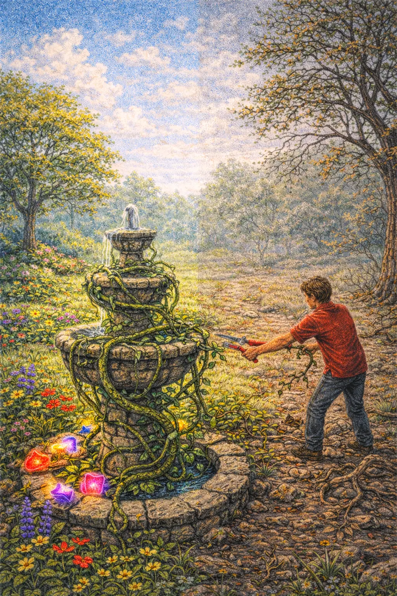

The Month-by-Month Impact of Porn and Masturbation
"The mind governed by the flesh is death, but the mind governed by the Spirit is life and peace."
(Romans 8:6)Small habits become strong chains over time. Early awareness can protect your future.

There was once a young gardener who inherited a beautiful garden from his father. The soil was rich, the trees were strong, and flowers of every color filled the pathways.
At the center of the garden stood a small fountain that watered everything around it. As long as the fountain flowed, the garden thrived.
One day the gardener noticed a small vine growing near the fountain's base. It looked harmless, even decorative, so he left it alone.
Days passed, and the vine wrapped itself around the fountain's stones. It didn't seem dangerous, just a little thicker.
Weeks passed, and the vine spread farther across the ground. It began creeping into the flower beds and around the tree trunks.
The gardener still ignored it.
Months later the vine had grown heavy and tangled. It wrapped tightly around the fountain, squeezing the stone and blocking the water.
Without water, the flowers slowly wilted. The grass lost its color. Even the trees began to weaken.
Only then did the gardener realize the vine had never been harmless. It had been slowly choking the very source of life in the garden.
With great effort he began cutting the vine away, piece by piece. It took time and patience, but as the fountain cleared, the water began to flow again.
Slowly the garden came back to life.
The gardener never forgot that the smallest vine, if ignored long enough, could nearly destroy the entire garden.
Watching pornography and engaging in habitual masturbation may seem harmless at first, but over time, it can significantly alter your mental, emotional, physical, and spiritual health. This chapter breaks down the changes that occur month by month when these behaviors are left unchecked, providing insight into their harmful effects and motivating you to break free before they take root.
A student finds themselves sneaking in quick porn sessions between study breaks, feeling a rush of excitement but later struggling to focus on assignments.
A young professional notices they are staying up late to watch porn, struggling to wake up on time for work, and feeling more tired throughout the day.
A college student finds themselves skipping workouts and study groups, preferring to stay alone and watch porn instead.
Take a moment to step away and let what you've reflected on settle in your heart.
A young man avoids friends and family gatherings, feeling ashamed about his growing reliance on pornography.
An employee makes repeated mistakes at work, realizing they cannot focus as well as they used to.
A man realizes he now turns to porn at the slightest sign of stress or boredom, losing interest in hobbies he once enjoyed.
The effects compound, making the behavior harder to quit without serious intervention.
An individual feels hopeless and resigned to their behavior, convinced they cannot quit even though they feel miserable.
Though the damage caused by prolonged pornography and masturbation can feel overwhelming, healing and restoration are always possible. God offers grace, forgiveness, and the strength to overcome.
Heavenly Father,
Thank You for Your grace and forgiveness, even when I feel trapped in harmful habits. I ask for Your strength to break free and for wisdom to make choices that honor You. Help me to seek the support I need and to trust You with my healing process. Thank You for Your love and for the hope You provide, even in my struggles. In Jesus' name, I pray. Amen.
You traced the long-term impact of harmful habits and identified a path toward restoration. Save your reflections and keep moving toward life and peace.
Use the links below to continue your journey.